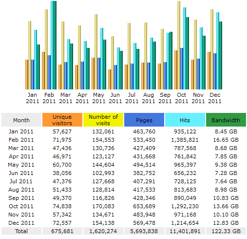

2011 turned out to be a great year for this website/blog in terms of traffic, with almost twice the amount of visits compared to 2010.

The site was visited on average 135,000 times a month, by 56,000 unique visitors, who viewed 474,000 pages (all these are monthly averages). Most of the traffic came from the United States, with Germany, Great Britain and China lagging far behind.
There was also far more traffic coming from search engines (mostly Google, with Yahoo, Microsoft and Yandex sharing the crumbs) than from direct links (mostly from Planet Python, Reddit and Hacker news).
The most searched phrases that led to the site were "eli bendersky", "python destructor", "ruby blocks" and "python serial port". I'm not sure whether it's flattening or creepy.
Finally, the five most viewed pages this year (counting only direct hits, not through the main page) were:
- How debuggers work: Part 1 – Basics
- Where the top of the stack is on x86
- The many faces of operator new in C++
- Writing a game in Python with Pygame. Part I
- How debuggers work: Part 2 – Breakpoints
So, a big thanks is due to all the readers of my blog, those who read it regularly, leave comments, re-post and discuss it on aggregators like Reddit, send me emails and so on. Without such massive support I doubt I'd have so much motivation for keeping it running.
Happy new year, with a hope (fueling an intention) for even more quality content in 2012.